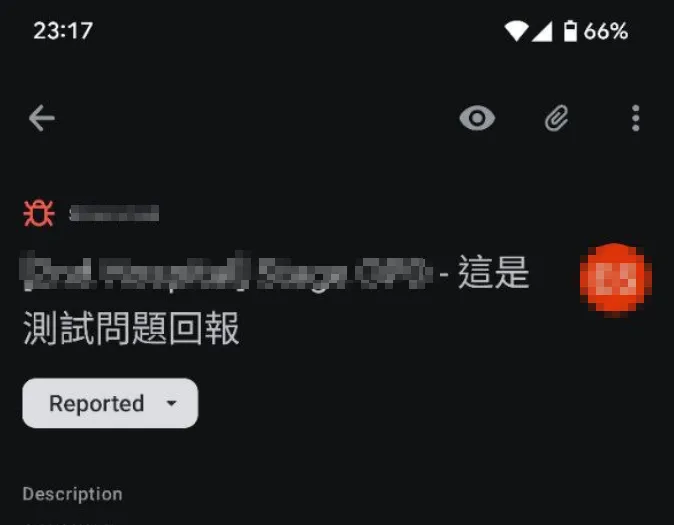
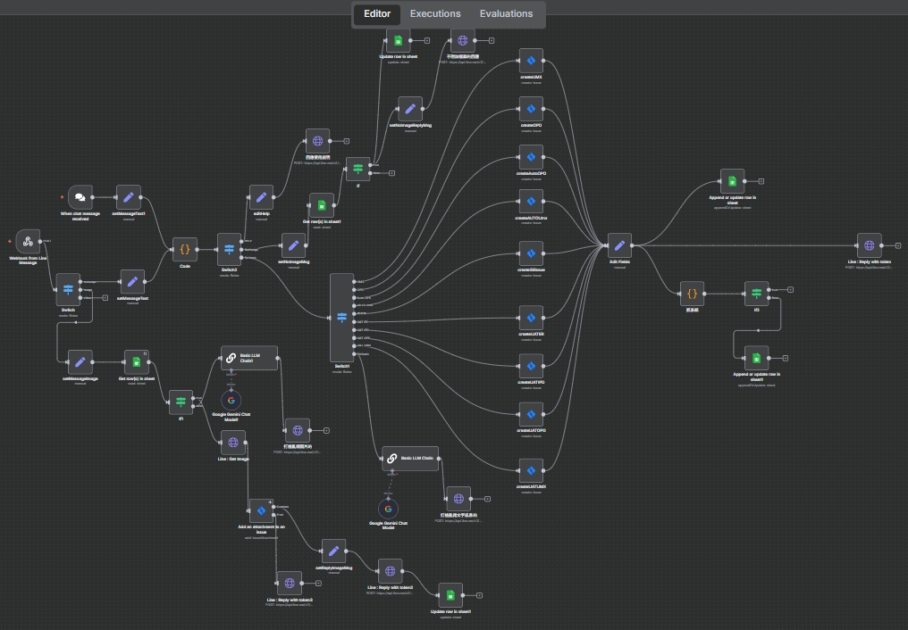

你的問題回報流程，是加速器還是絆腳石？
我如何打造一個LINE回報機器人，讓第一線人員用手機聊天就能即時回報問題、附上截圖，並自動在Jira生成開發任務，將回報效率提升10倍以上。
The Challenge: 現場與開發團隊的鴻溝
在客戶現場進行使用者測試或系統導入時，第一線人員發現的問題，往往難以即時、完整地傳遞給後方開發團隊。傳統流程充滿了斷點。
回報不即時
需等到回到辦公室，才能憑記憶和筆記整理問題，細節早已遺失，錯失黃金處理時機。
流程繁瑣
手動登入Jira、選擇專案、填寫欄位、上傳圖片... 繁瑣的步驟降低了回報意願，許多小問題因此被忽略。
權限與成本障礙
並非所有現場人員都有Jira帳號。為臨時或非技術人員開設帳號，既增加成本又有安全疑慮。
The Solution: 會開Jira單的LINE機器人
我打造了一個「問題回報閘道」，將團隊最熟悉、最高頻使用的通訊軟體 LINE，直接變成了強大的Jira問題回報入口。
1. 在LINE中即時回報
現場人員只需用手機打字、拍照，就像和同事聊天一樣簡單，即可完成問題回報。

2. 自動生成Jira任務
n8n自動化流程在背景運作，將LINE的訊息和圖片，轉化為一張資訊完整的Jira Ticket，並自動歸檔到對應專案。
整個過程對使用者來說，只是傳了幾則LINE訊息，但背後已完成跨系統的複雜工作。
The Impact: 加速問題解決循環
這個看似簡單的工具，為團隊協作與產品品質帶來了顯著的正面影響。
回報效率 x10
10x
將單一問題的回報與建檔時間，從平均 15-20 分鐘大幅縮短至 1 分鐘內，讓團隊能更專注於與使用者互動。
資訊保真度 100%
100%
圖文並茂的即時回報，確保開發團隊能獲取最真實、最完整的現場情境，減少因資訊失真造成的溝通成本。
降低協作門檻
Zero-Cost
無需為所有現場人員購買Jira授權或進行培訓，實現了零成本、零門檻的全員品質參與。
核心做法
- LINE Bot Webhook 觸發: 使用者在 LINE 傳送訊息或圖片，觸發 n8n 的 Webhook 節點，即時捕捉回報內容。
- 智慧分派: n8n 工作流會根據訊息中的關鍵字（如專案代號 Project Key），自動將 Ticket 建立到正確的 Jira 專案中。
- Jira API 整合: 自動呼叫 Jira API 建立 Ticket，並將 LINE 傳來的圖片作為附件(Attachment)上傳，完整重現現場狀況。
- 欄位自動化: 自動填寫回報者(Reporter)、指派對象(Assignee)、標籤(Labels)等欄位，減少手動操作，確保資訊一致性。
- Excel 總表歸檔: 同步將每一筆回報的內容與對應的 Jira 網址登記到 Excel 總表，方便非 Jira 使用者追蹤與管理。